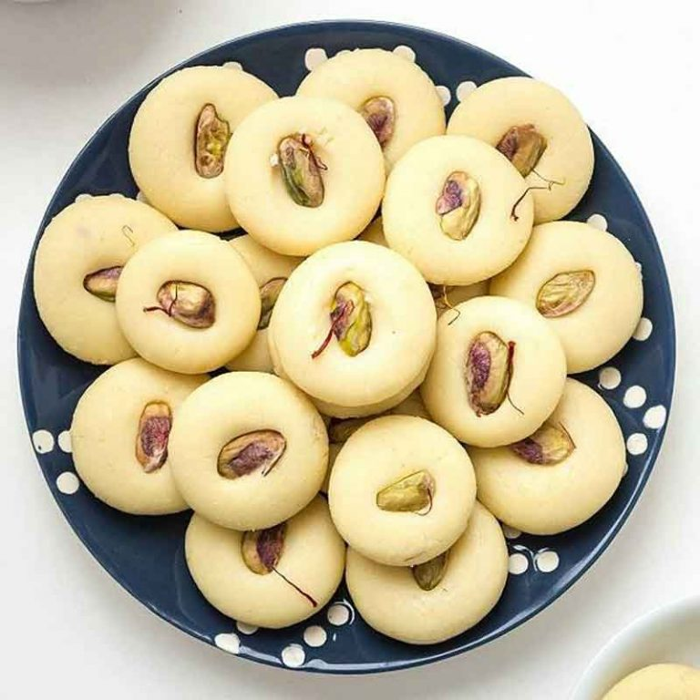

Gulab Jamun
Ingredient
- Sugar
- Oil
- Baking powder
- Flour
- Milk
Recipe
- Boil sugar and water to prepare syrup remove from fire. Add cardamom and keep asi.
- In a mixing bowl put the flour, paneer, sooji,Milk, baking powder and baking soda.
- Mix gently to make a soft dough. Do not knead too much.
- Divide the mixture into 30-35 portions and gently roll into round gulab jamuns.
- Keep putting the fried gulab jamuns in the prepared sugar syrup.
- Once all the gulab jamuns are in the sugar syrup bring it to a boil and remove from flame.
- Serve warm
Barfi
Ingredient
- Sugar
- ghee
- Cocoa Powder
- Cashew Bits
- Milk
Recipe
- Combine ghee, Nestlé MILKMAID, and sugar (if needed) in a pan on low flame.
- Stir continuously till thick. Pour half into a greased plate and spread evenly after a few minutes.
- Add cocoa powder and cashew bits to the remaining mixture in pan and combine well, stirring for 2-3 minutes.
- Spread this remaining mixture in the greased plate on top of the bottom layer and spread evenly.
- Once it cools down, cut into desired shapes.

Peda
Ingredient
- Sugar
- Corn flour
- Lemon juice
- Ghee
- Elaichi Powder
Recipe
- Mix together all the ingredients except elaichi powder.
- Heat the mixture in a heavy bottom kadai.
- Cook with constant stirring till thick and the mixture starts leaving the sides of the kadai.
- Remove from fire and cool.
- Shape into pedas and sprinkle with elaichi powder.

Kheer
Ingredient
- Milk
- Dry fruits
- Rice
- Elaichi Powder
Recipe
- Wash rice and pressure cook it in milk for 10 minutes.
- Add milk and cook for another 5 to 7 minutes, stirring constantly, until the kheer reaches the desired consistency.
- Remove from the flame.
- Serve garnished with nuts and/or elaichi powder.